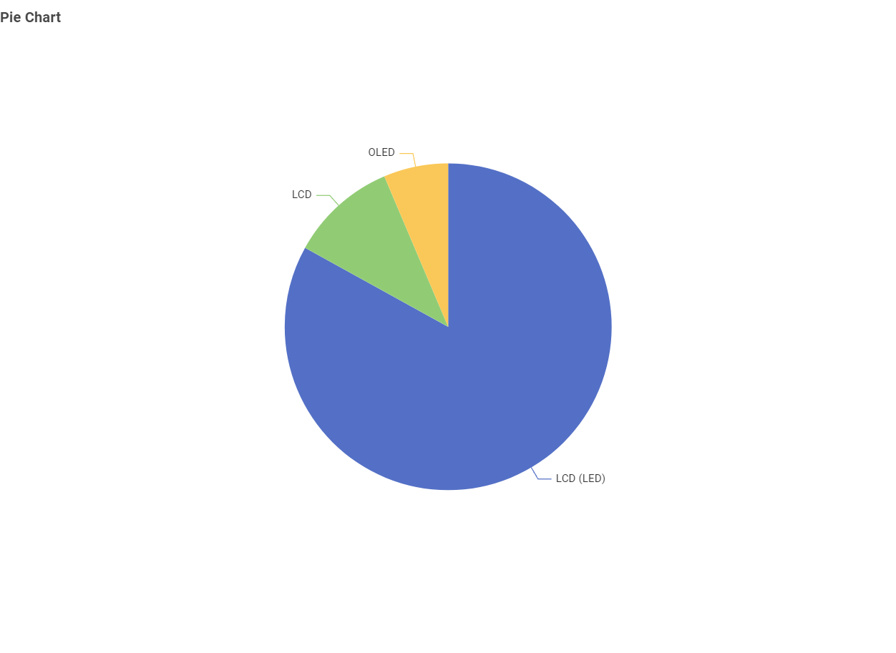
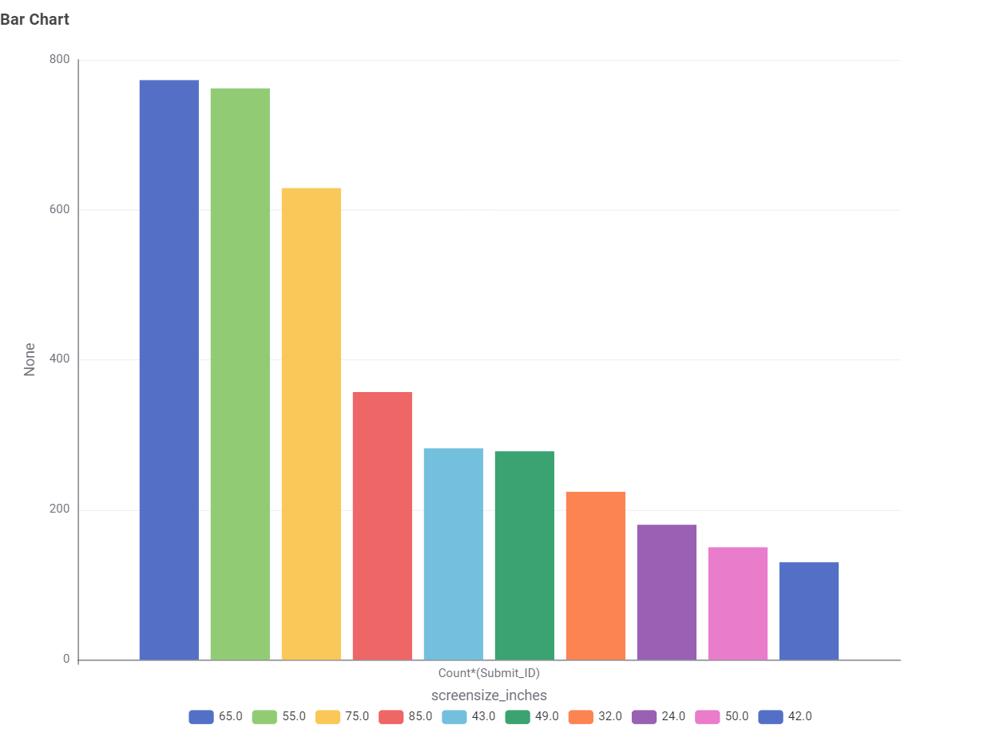
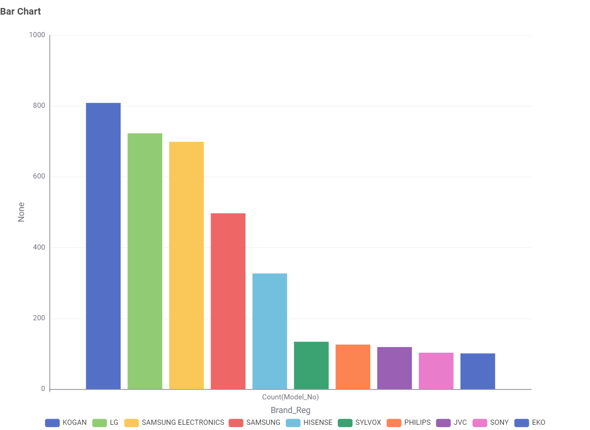
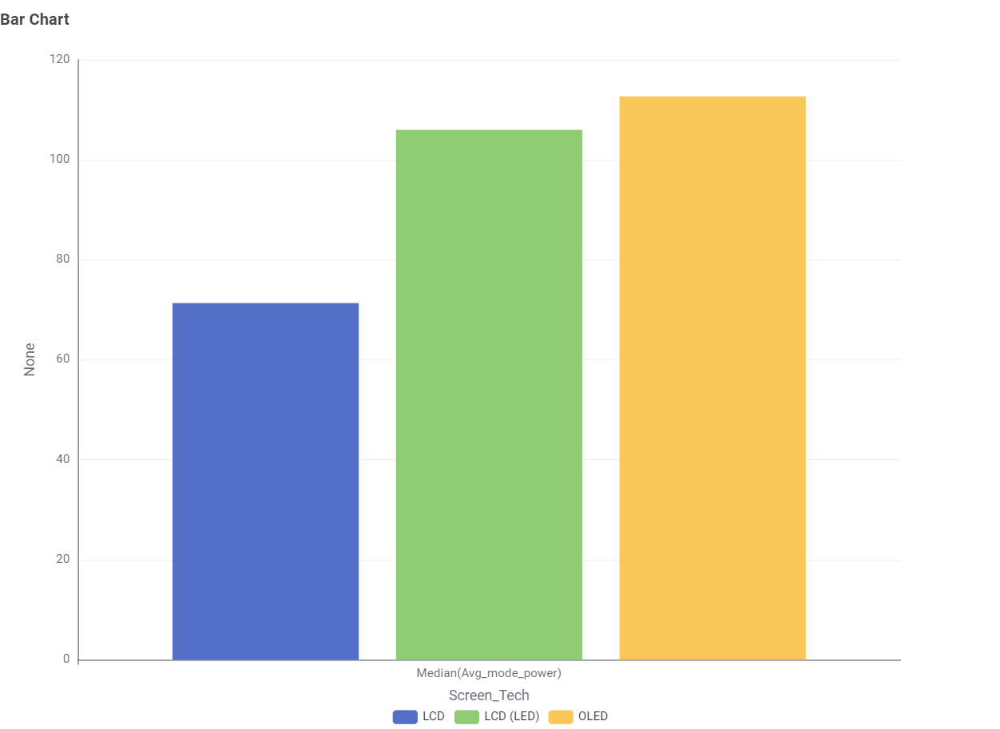
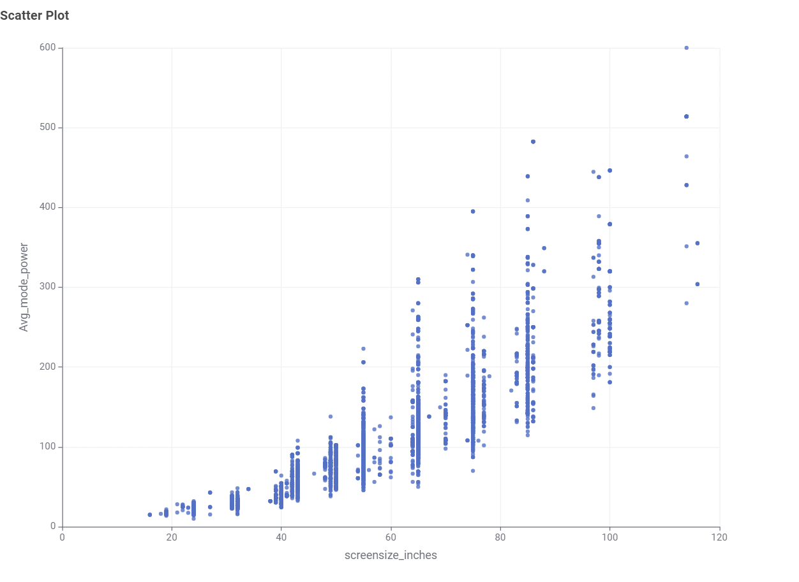
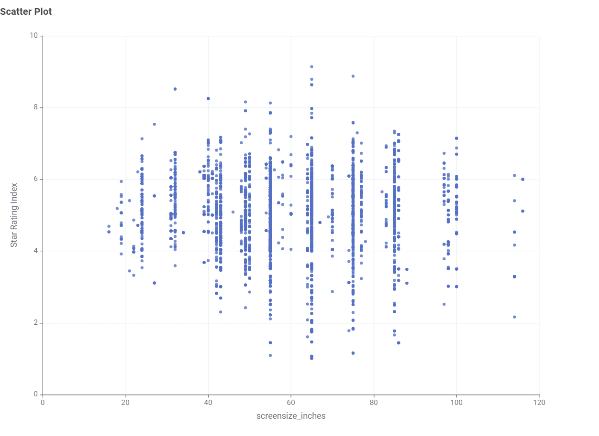

AUSTRALIAN TELEVISION ENERGY DATA
Television Energy Insights
This data story explores the television choices available in Australia. It helps consumers understand how screen technology, screen size, brand and energy use differ when choosing a television.
CHART 1
What type of TV screen technologies are currently available in Australia and which are the most frequent?
The Australian television market includes different screen technologies.
LCD is currently available in Australia and is the most frequent screen technology.

CHART 2
What screen sizes are available and which are most frequent?
Televisions are available in a range of screen sizes, giving consumers different options when choosing a TV.
65 inches is the most frequent screen size.

CHART 3
Which brands have the largest number of models?
The number of television models differs across brands available in the dataset.
Kogan has the largest number of models.

CHART 4
Which type of screen technology consumes the least amount of power?
Power consumption can vary between different television screen technologies.
LCD screen technology consumes the least amount of power.

CHART 5
What is the relationship between screen size and power use?
Comparing screen size with power consumption helps show whether larger televisions generally require more power.
As the screen size increases, the power consumed also increases.

CHART 6
What is the relationship between star rating and screen size?
Star ratings can be compared with screen size to explore whether larger televisions necessarily have different energy-efficiency ratings.
There is no clear relationship between screen size and star rating. Different screen sizes can have a wide range of star ratings.

WHAT DOES THIS MEAN?
Making an Informed TV Choice
Consumers can compare televisions not only by popular screen sizes, technologies and brands, but also by energy use. The data shows that larger screens generally consume more power, while star ratings can vary across different screen sizes.
Learn About This Project